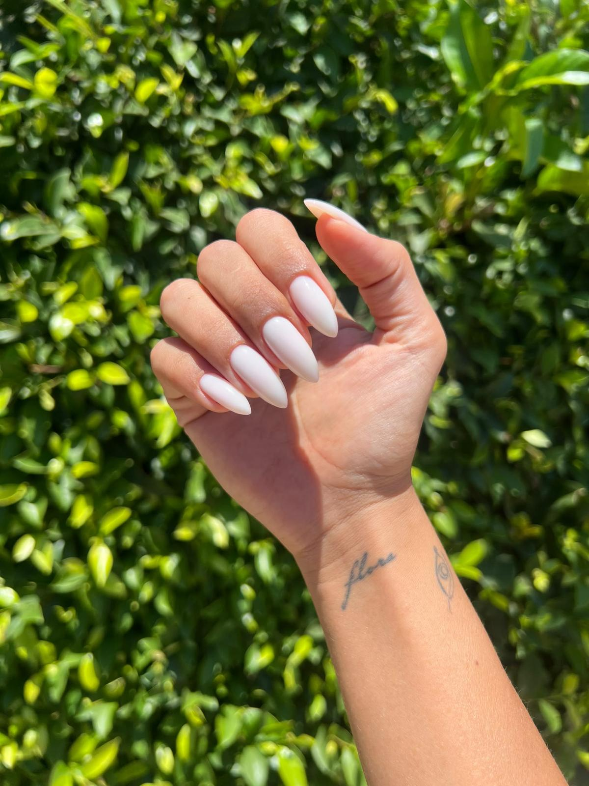
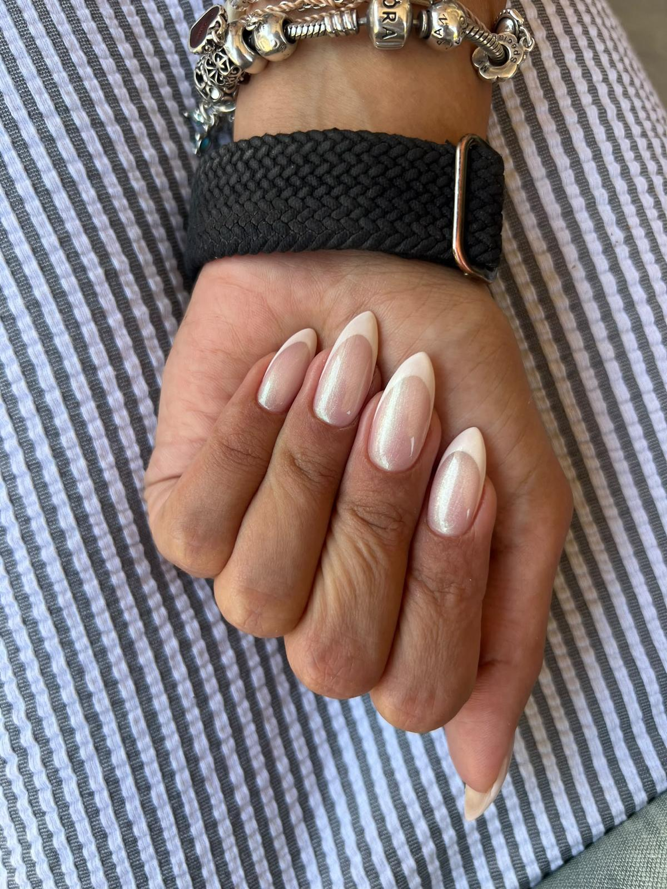
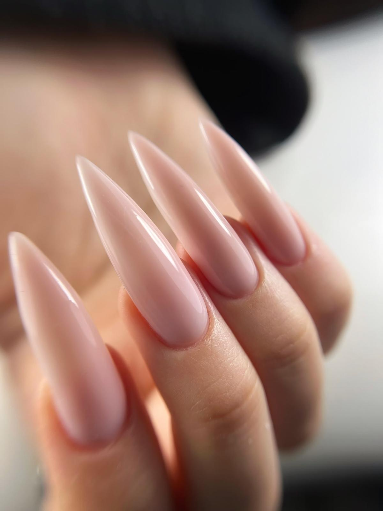
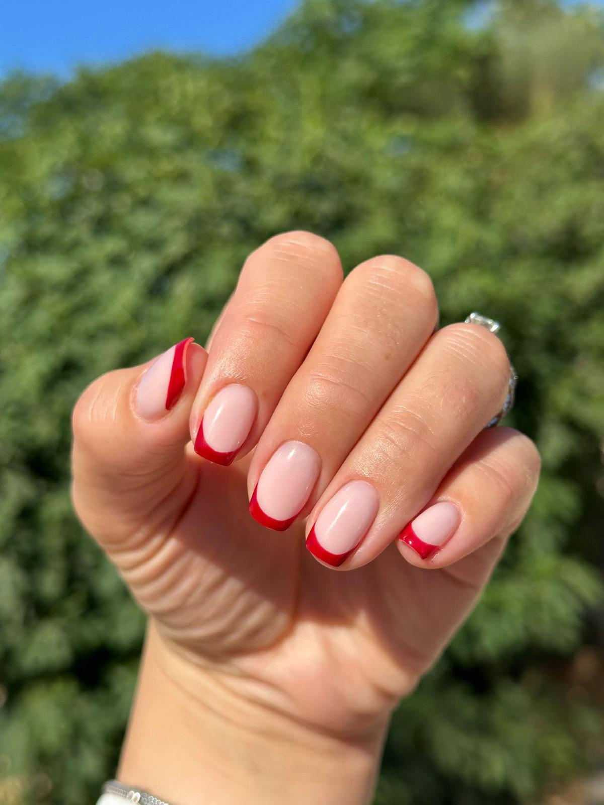
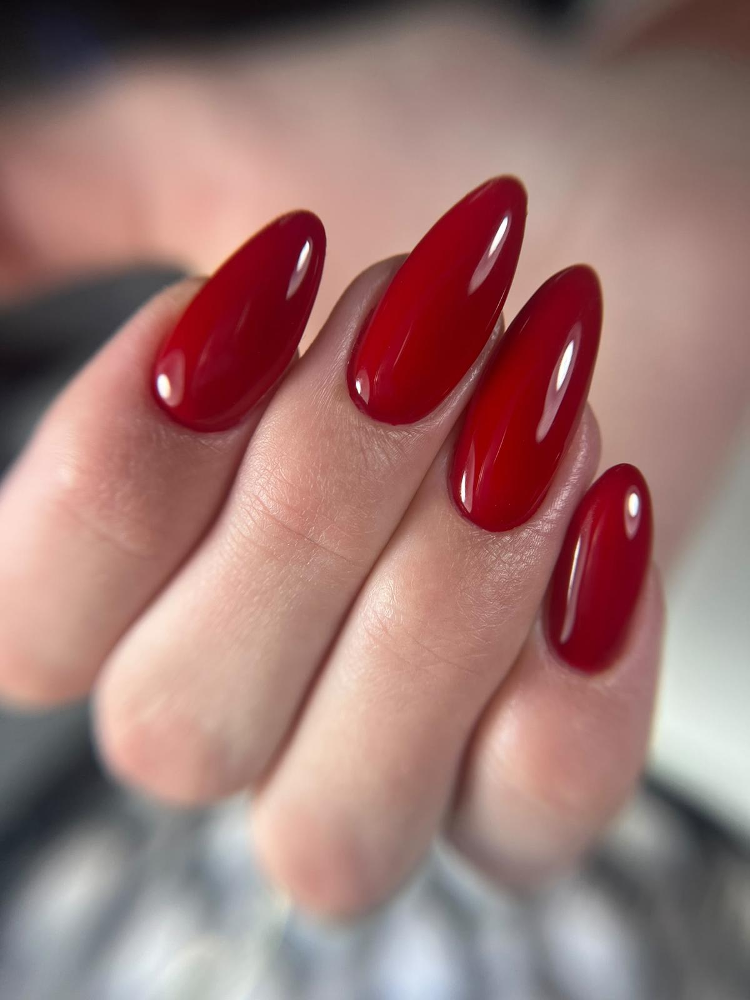
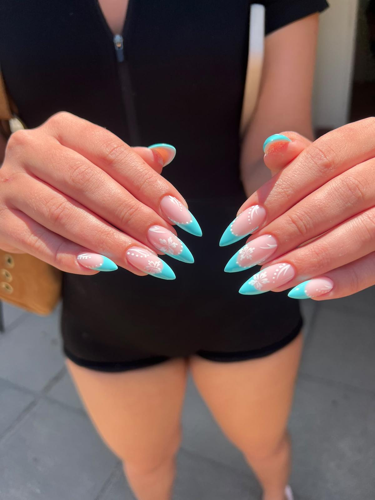

נעים להכיר, אני ענבל🤍
אני בתחום הציפורניים כבר 7 שנים, ובמהלך הדרך צברתי ניסיון בעבודה עם מאות לקוחות.
עם השנים הבנתי שמקצועיות אמיתית נבנית מהיסודות: מהבנת התהליך, דרך שליטה בטכניקה ועד לדיוק בפרטים הקטנים שעושים את ההבדל.
כיום אני מעבירה ימי השתלמות אישיים, אחד על אחד, למניקוריסטיות שרוצות לחזק את הידע המקצועי שלהן, לדייק את העבודה ולהתקדם לשלב הבא.
הגישה שלי מבוססת על סבלנות, ירידה לפרטים והתאמה אישית לכל תלמידה. חשוב לי להבין מה כבר עובד לך טוב, לזהות את הנקודות שבהן את יכולה להשתפר ולתת לך כלים מעשיים להמשך הדרך.
כי כל תלמידה נמצאת במקום אחר, ולכל אחת מגיעה הדרכה שמתאימה לה.
מה נלמד יחד?
במהלך ההשתלמות נעבור על שלבי העבודה החשובים ונעמיק בטכניקות שיעזרו לך לעבוד בצורה מדויקת ומקצועית יותר.
- הכנה נכונה של הציפורן

מניקור מדויק ונקי
מריחה צמודה לקוטיקולה- שימוש נכון בכלים

חיטוי ועיקור- מבנה אנטומי נכון

זיהוי טעויות ושיפור נקודות החולשה בטכניקה שלך
למי ההשתלמות מתאימה?
למי שסיימה קורס בסיסי ורוצה לחזק את היסודות, להבין לעומק את שלבי העבודה ולפתח ביטחון מקצועי.
למניקוריסטיות שכבר עובדות בתחום ורוצות לדייק את הטכניקה, לשפר את שיטת העבודה ולהגיע לתוצאות אסתטיות ומדויקות יותר.
ההשתלמות אישית ומותאמת לרמה שלך ולמטרות שאת רוצה להשיג.
למה ללמוד איתי?
שנות ניסיון בתחום
ניסיון מקצועי שנצבר לאורך שנים של עבודה עם לקוחות.
יחס אישי אחד על אחד
כל תשומת הלב מופנית אלייך, לשאלות שלך ולצרכים המקצועיים שלך.
דיוק בפרטים הקטנים
התמקדות בשלבי העבודה ובנקודות שדורשות שיפור.
למידה סבלנית ויסודית
הסברים, הכוונה והעמקה בטכניקה, בקצב שמתאים לתהליך הלמידה שלך.
מהעבודות שלי
החליקי לצד כדי לראות עוד

ככה נראה היום שלך
יום שלם, רק את ואני, בקצב שלך. את מגיעה עם מודליסטית, ואנחנו עובדות יחד מההכנה ועד התוצאה הסופית.
-
הדגמה מקצועית
כל הפרטים הקטנים שעושים את ההבדל
נצלול לעומק שיטת העבודה שלי, שלב אחר שלב, עם הסברים מקצועיים, דיוק בפרטים הקטנים וטכניקות שיעזרו לך להבין לא רק איך לבצע, אלא גם למה. תקבלי כלים, דגשים וטיפים מהניסיון שלי, במטרה לקחת את רמת העבודה שלך קדימה.
-
עבודה מעשית
הליווי האישי שעושה את ההבדל
זה הזמן שלך ליישם את מה שלמדת, כשהפעם את לא צריכה להבין הכול לבד. אהיה לצדך לאורך העבודה, אדייק איתך כל שלב, אזהה נקודות לשיפור ואתן לך הכוונה מקצועית המותאמת אלייך. המטרה היא שתביני את הטכניקה לעומק, תחדדי את היכולות שלך ותצאי עם כלים מעשיים שתוכלי ליישם בעבודה שלך.
-
סיכום מקצועי וקבלת תעודה
נסכם את כל מה שלמדנו, נדייק את הנקודות החשובות ונחדד את הדגשים שילוו אותך גם בהמשך הדרך. בסיום ההשתלמות תקבלי תעודה, ותצאי עם ידע מקצועי, הבנה מעמיקה יותר של הטכניקה ותוכנית ברורה להמשך התרגול וההתפתחות שלך.
זו לא רק השתלמות, זו השקעה ברמה המקצועית שלך.
זמן איכות מקצועי, יחס אישי, ירידה לפרטים הקטנים וליווי צמוד שמאפשר לך לעצור, לשאול, להבין ולדייק את העבודה שלך. כל מה שצריך כדי להתקדם לשלב הבא הוא ללמוד את הדברים הנכונים, בדרך הנכונה.
השלב הבא שלך מתחיל כאן.
לפרטים ולתיאום השתלמות בוואטסאפענבל, קיבוץ שער העמקים